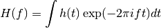
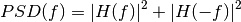

11.10.3. astroML.fourier.PSD_continuous¶
- astroML.fourier.PSD_continuous(t, h, axis=-1, method=1)[source]¶
Approximate a continuous 1D Power Spectral Density of sampled data.
This function uses the Fast Fourier Transform to approximate the continuous fourier transform of a sampled function, using the convention

It returns f and PSD, which approximate PSD(f) where

Parameters : t : array_like
regularly sampled array of times t is assumed to be regularly spaced, i.e. t = t0 + Dt * np.arange(N)
h : array_like
real or complex signal at each time
axis : int
axis along which to perform fourier transform. This axis must be the same length as t.
Returns : f : ndarray
frequencies of result. Units are the same as 1/t
PSD : ndarray
Fourier coefficients at each frequency.